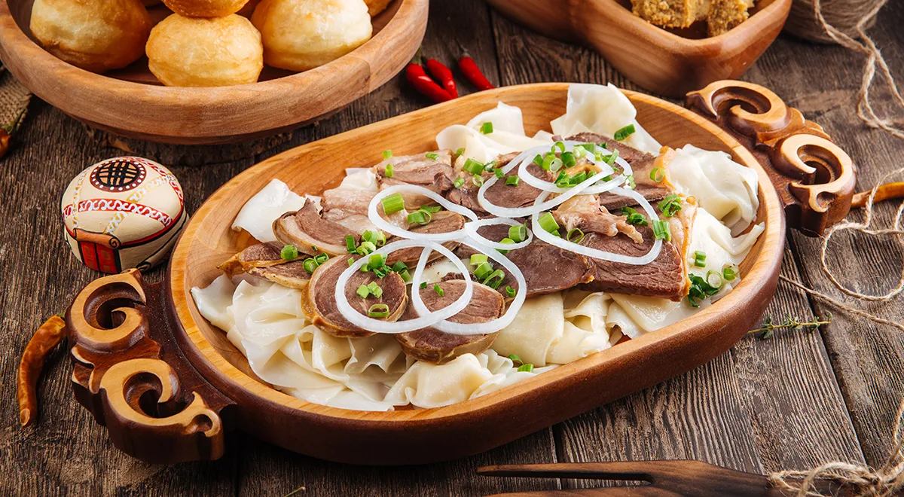

Traditional Beshbarmak

Ingredients:
- Meat(Horse meat,beef,lamb) - 1.0 kg
- Dough - 2 slices
- Onion - 2 pieces
- Salt, Black pepper - to taste
Instructions:
- Place the meat in a pot with water and set the heat to above medium.
- Roll out the dough and let it rest.
- When the meat is ready, take it out and place the dough in the pot, having first cut it.
- When the dough is ready, take it out and serve the dish, placing chopped onion on top.